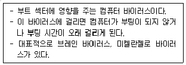
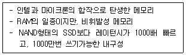
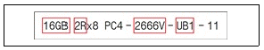
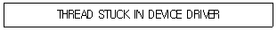

PC정비사-2급 (2022-02-27 기출문제)
1과목: PC유지보수
1. 에러를 자신이 찾아 수정할 수 있는 코드는?
- 패리티 코드(Parity Code)
- 해밍 코드(Hamming Code)
- 그레이 코드(Gray Code)
- BCD코드(Binary Coded Decimal)
(정답률: 88%)

2. Linux 명령어 중에서 의미가 다른 하나는?
- reboot
- init 6
- shutdown –r now
- shutdown -h now
(정답률: 86%)
3. 다음 중 Window 제어판 도구 중 ‘네트워크 연결’을 실행할 때 사용하는 명령으로 알맞은 것은?
- control firewall.cpl
- control ncpa.cpl
- control desk.cpl
- control appwiz.cpl
(정답률: 87%)
4. Windows 10 Pro의 [시스템 구성] - [도구] 의 하위 기능으로 잘못된 것은?
- 동기화 센터
- 이벤트 뷰어
- 시스템 정보
- 성능 모니터
(정답률: 81%)
5. 시스템 처리 방식에 대한 설명 중 올바른 것은?
- 실시간 처리 시스템(Real Time Processing System) : 데이터가 발생하는 즉시 컴퓨터에서 처리가 이루어지는 시스템으로 은행의 온라인이나 각종 예약업무에 대표적으로 사용된다.
- 일괄 처리 방식(Batch Processing System) : CPU가 한 사용자로부터 다른 사용자로 빠르게 교환시켜 주는 시스템으로 많은 사용자가 동시에 사용할 때도 실제는 한 개의 컴퓨터를 사용하고 있지만 각 사용자는 독립된 컴퓨터로 작업하는 느낌을 가질 수 있다.
- 시분할 시스템(Time Sharing System) : 여러 개의 작업을 하나로 묶어 자동적으로 한 작업에서 다른 작업으로 연속될 수 있도록 한 처리 방식이다.
- 시분할 시스템(Time Sharing System)은 주로 항공표, 기차표 예매 등에 사용된다.
(정답률: 87%)
6. 영문자 한 글자를 나타낼 수 있는 최소 단위는?
- 1 bit
- 1 byte
- 1 Kbyte
- 1 Mbyte
(정답률: 87%)
7. 운영체제에서 기억장치를 관리하기 위한 전략 중 배치(Placement) 전략에 해당되지 않는 기법은?
- 요구 반입 (Demand Fetch) 기법
- 최초 적합 (First Fit) 기법
- 최적 적합 (Best Fit) 기법
- 최악 적합 (Worst Fit) 기법
(정답률: 83%)
8. 운영체제의 범주에 속하지 않는 것은?
- MS-DOS
- JINI
- UNIX
- ios
(정답률: 92%)
9. 물리적인 하나의 하드디스크를 용량에 따라 여러 개의 논리적 하드디스크 드라이브로 분할하는 것을 뜻하는 용어는?
- 스핀들 (Spindle)
- 로우레벨 포맷 (Low-level Format)
- 파티션 (Partition)
- 하드디스크 인터리브 (Hard Disk Interleave)
(정답률: 93%)
10. Windows 10 Pro 에서 PNG 형식의 파일을 수정하고자 할 때 적당한 프로그램은?
- 워드패드
- 그림판
- 메모장
- 클립보드
(정답률: 87%)
11. A씨는 사용중인 PC의 그래픽 카드를 업그레이드 하기 위해 PC의 장착된 메인보드의 모델명을 확인해 보려고한다. 명령 프롬프트에서 입력할 명령어는?
- wmic baseboard get product
- Quick board Search
- Deeper board Search
- filesystems baseboard product
(정답률: 64%)
12. 다음 중 Windows 10 사용자가 듀얼모니터 또는 빔 프로젝터와 연결하고 복제, 확장 등의 기능을 빠르게 사용하기 위한 단축키는 무엇인가?
- 윈도우 로고 키 + P
- 윈도우 로고 키 + S
- 윈도우 로고 키 + E
- 윈도우 로고 키 + R
(정답률: 89%)
13. 다음 중 Windows 10에서 사용자 계정의 암호를 변경하려면 계정 항목 중 어느 것을 선택해야 하는가?
- 사용자 정보
- 메일 및 계정
- 로그인 옵션
- 회사 또는 학교 액세스
(정답률: 80%)
14. 컴퓨터 전원을 켜면 디스크에 저장되어 있는 운영체제를 메모리에 로드한다. 이러한 과정을 부팅이라고 하는데, 부팅 정보를 가지고 있는 디스크 영역을 부트 섹터라고 한다. 다음 설명하는 바이러스 종류는 무엇인가?

- 암호화 바이러스
- 부트 바이러스
- 파일 바이러스
- 매크로 바이러스
(정답률: 84%)
15. A씨는 PC 사용 중 메모리가 부족하여 이것을 설정하여 하드디스크 일부 공간을 메모리로 사용하였다. 이것은 무엇인가?
- 메모리 업그레이드
- 시작 및 복구
- 하이퍼 메모리
- 가상 메모리
(정답률: 86%)
2과목: PC운영체제
16. 다음은 메모리를 외형상 분류한 것이다. 성격이 다른 하나는?
- DIP
- SIMM
- DIMM
- SRAM
(정답률: 68%)
17. 컴퓨터에 일정한 전압을 유지시켜주기 위해 설치하는 장비는?
- AVR(Automatic Voltage Regulator)
- SRM(Storage Resource Management)
- ASP(Application Service Provider)
- AUI(Attachment Unit Interface)
(정답률: 89%)
18. HDD의 분당 회전수를 나타내는 단위는?
- RPM
- PPM
- BPS
- CPS
(정답률: 85%)
19. 하드디스크의 용량을 구하는 방법은?
- 헤드 수 X 실린더 수 X 섹터 수 X 섹터당 바이트 수
- 헤드 수 X 실린더 수 X 섹터당 바이트 수
- 헤드 수 X 클러스터 수 X 섹터 수 X 섹터당 바이트 수
- 실린더 수 X 섹터 수 X 섹터당 바이트 수
(정답률: 78%)
20. PC 케이스가 ATX형과 MATX형으로 구분할 수 있는 것과 마찬가지로 ATX, MATX 유형으로 구분이 되는 것은?
- 중앙처리장치(CPU)의 속도
- 메인보드(Main Board)의 규격
- 그래픽 카드(Graphic Card)의 규격
- 램(RAM)의 속도
(정답률: 75%)
21. 계산속도 단위가 빠른 것에서 느린 것 순으로 차례대로 나열되어 있는 것은?
- ps > μs > ns > ms
- ps > ns > μs > ms
- ms > μs > ns > ps
- ms > ns > μs > ps
(정답률: 78%)
22. SSD의 연결 인터페이스 중 잘못된 것은?
- SATA
- mSATA
- M.2
- DVI
(정답률: 81%)
23. ＇IEEE 1284＇는 무엇에 대한 규격인가?
- 직렬포트
- USB
- 병렬포트
- LAN
(정답률: 76%)
24. 컴퓨터에서 소리를 합성할 때 사용하는 방식 중에서 소리의 주파수를 변조해 소리를 만드는 음파 합성 방식은?
- PCM(Pulse Coded Modulation) 방식
- FM(Frequency Modulation) 음원 방식
- 웨이브 테이블(Wave Table) 방식
- 풀 듀플렉스(Full Duplex) 방식
(정답률: 74%)
25. 스마트폰을 일종의 무선 모뎀으로 활용하여 외부기기가 무선인터넷을 사용할 수 있게 해주는 기술은 무엇인가?
- NIC
- 테더링
- DLNA
- 리피터
(정답률: 82%)
26. 다음 중 모니터의 주사율 단위는?
- ms
- cd
- Hz
- cm
(정답률: 90%)
27. 다음의 내용이 설명하고 있는 메모리는 무엇인가?

- 옵테인 메모리
- 플래시 메모리
- SD 메모리
- DDR4 메모리
(정답률: 65%)
28. 컴퓨터시스템을 동작시켰을 경우에 고장에서 고장까지 걸리는 평균시간을 나타내며, 높을수록 신뢰성이 높을 것을 나타내는 용어는 무엇인가?
- MTBF
- ISO
- RoHS
- RPM
(정답률: 68%)
29. DDR 메모리 라벨의 표시된 내용이다. 그림에 대한 설명으로 올바르지 않은 것은?

- 16GB은 메모리의 총 용량을 말한다.
- 2R은 양면 메모리이며, 1R은 단면 메모리를 말한다.
- 2666V는 대역폭이며, 2,666MByte/s이다.
- UB1은 UnBuffered 메모리를 말한다.
(정답률: 74%)
30. 다음 중 디스크 미러링(disk mirroring) 방식을 사용하는 RAID-1의 특징이 아닌 것은 무엇인가?
- 비용이 많이 든다.
- 신뢰도가 높다.
- 병렬 읽기가 가능하다.
- 쓰기 속도가 2배이다.
(정답률: 65%)
3과목: PC주변기기
31. BIOS의 기능에 대한 설명으로 잘못된 것은?
- 컴퓨터의 전원이 켜지면 하드웨어가 제대로 작동하는지를 자가 진단한다.
- 컴퓨터의 각 장치들이 작업을 할 수 있도록 초기화 한다.
- 부팅 디스크로부터 부팅 정보를 읽어 들인다.
- Windows 부팅이 시작된 후에 시작프로그램을 실행시킨다.
(정답률: 64%)
32. CPU가 64비트로 업그레이드 되었다는 것은 무엇을 의미하는가?
- 외부버스 : 64비트, 내부버스 : 32비트
- 외부버스 : 32비트, 내부버스 : 64비트
- 외부버스 : 32비트, 내부버스 : 32비트
- 외부버스 : 64비트, 내부버스 : 64비트
(정답률: 80%)
33. CPU가 CAS/RAS 에 신호를 보내어 메모리의 정보가 도착할 때까지의 시간을 나타내는 용어는?
- Lead
- Delay
- Latency
- Integrity
(정답률: 83%)
34. UEFI 바이오스가 지원하는 이것은 파티션 테이블 크기를 확장하여 디스크 하나에 주 파티션을 128개 만들 수 있으며, 주소 체계를 64비트로 확장해 이론적으로 최대 8ZB까지 지원할 수 있는 이것은 무엇인가?
- MBR
- WHQL
- GPT
- TDP
(정답률: 58%)
35. Windows 10 사용중 보기와 같은 블루스크린 오류 메시지가 나타났을 시 해결방법은 무엇인가?

- ODD 드라이버 업데이트
- 그래픽 카드 드라이버 업데이트
- 사운드 카드 드라이버 업데이트
- 하드디스크 드라이버 업데이트
(정답률: 74%)
36. 네트워크를 이용하여 원격으로 컴퓨터 전원을 켜고자 할 때 바이오스에서 어떤 메뉴를 활성화 해야 하는가?
- power to lan
- netstart
- wake up on lan
- network start
(정답률: 81%)
37. POST 과정의 순서가 바르게 나열된 것은?
- 시스템 버스 테스트 - 그래픽 카드 테스트 – 메모리 테스트 - 키보드 테스트 - 디스크 테스트 - P&P 기능 동작 - CMOS 내용확인 - DMI 기능 동작
- DMI 기능 동작 - 그래픽 카드 테스트 - 메모리 테스트 - 키보드 테스트 - 디스크 테스트 - P&P 기능 동작 - CMOS 내용확인 - 시스템 버스 테스트
- 시스템 버스 테스트 - P&P 기능 동작 - 메모리 테스트 - 키보드 테스트 - 디스크 테스트 - 그래픽 카드 테스트 - CMOS 내용확인 - DMI 기능 동작
- 시스템 버스 테스트 - CMOS 내용확인 - 그래픽 카드 테스트 - 메모리 테스트 - 키보드 테스트 - P&P 기능 동작 - 디스크 테스트 - DMI 기능 동작
(정답률: 73%)
38. BIOS 암호에 대한 내용으로 잘못된 것은?
- 셋업으로 설정되는 모든 내용은 CMOS에 저장된다.
- 메인보드의 CMOS CLEAR 점퍼를 이용해 암호를 제거할 수 있다.
- 암호는 옵션값을 조정하여 셋업에 들어갈 경우만 물을 수 있도록 할 수 있다.
- CMOS 정보를 지운후, 컴퓨터를 다시 켜면 다시 셋업으로 들어갈 필요는 없다.
(정답률: 67%)
39. BIOS의 설정 값이 자주 초기화된다. 원인으로 올바른 것은?
- 메인보드 배터리 전력 부족
- 메인보드 캐쉬 메모리 오류
- CMOS 설정 오류
- 메인보드와 CMOS간의 호환성 문제
(정답률: 73%)
40. SCSI에 대한 설명으로 잘못된 것은?
- 기본적으로 하나의 인터페이스 카드에 257개의 주변장치를 연결할 수 있다.
- 여러 작업을 동시에 하는 멀티태스킹에 유리하다.
- SCSI는 주로 별도의 컨트롤러를 장착한 후, SCSI 장치를 컨트롤러 카드 포트에 꽂아서 사용한다.
- 주변장치의 가격이 E-IDE 방식에 비해 고가이다.
(정답률: 64%)
41. 드라이버 롤백 기능에 대한 설명 중 잘못된 것은?
- 컴퓨터 시스템 장치의 드라이버를 업그레이드 한 후 리소스 충돌 등의 문제가 발생한 경우, 업그레이드 설치 이전의 상태로 되돌리기 위해 사용할 수 있다.
- 업데이트 바로 이전의 상태로만 되돌리는 것이 가능하며, 두 번 이상 변경된 드라이버를 건너뛰어 되돌리는 것은 불가능하다.
- 프린터 드라이버도 되돌릴 수 있다.
- 드라이버 롤백으로 드라이버를 교체할 수는 있지만 제거할 수는 없다.
(정답률: 78%)
42. Windows에서 시스템 파일의 오류 정보를 기록하는 파일로 올바른 것은?
- sys_err.Log
- CBS.Log
- DEL.Log
- Boot.Log
(정답률: 54%)
43. 바이오스 설정 메뉴중 현재 시간이나 하드디스크의 연결상태, 그리고 탑재된 메모리의 용량 등을 확인하고 이를 수정할 수 있는 메뉴로 옳은 것은?
- Standard CMOS Features
- Advanced BIOS Features
- Integrated Peripherals
- Power Management Setup
(정답률: 47%)
44. PC조립 중 커넥터 연결에 대한 설명으로 옳지 않은 것은?
- 파워 서플라이에서 나온 24핀 커넥터는 메인보드 24핀 커넥터에 끼운다.
- HDD LED와 전원 LED는 극성을 구분하여 연결 하지 않으면 장치가 고장나서 파워 서플라이를 새로 구입해야 한다.
- 커넥터에 돌기가 있거나 모서리가 있어 잘못 끼우려고 해도 끼울 수가 없다.
- 파워 서플라이에서 나온 CPU4핀(혹은 8핀)은 메인보드 보조 전원 커넥터에 끼운다.
(정답률: 77%)
45. PC조립 중 CPU를 올바르게 장착하는 방법으로 옳지 않은 것은?
- CPU는 정전기에 민감하므로 모서리를 잡고 장착하여야 한다
- 메인보드를 장착하고 CPU를 장착하면 불편하므로 우선 메인보드를 케이스에 장착하기 전에 CPU를 장착하는 것이 좋다.
- CPU 핀은 소켓에 끼우는 것이 아니고 얹혀 놓는 것으로 무리한 힘을 가하지 않는다.
- CPU 소켓보다 CPU크기가 크면 칼로 큰 만큼 자르고 장착한다.
(정답률: 80%)
4과목: PC네트워크
46. 네트워크 장비 중 분배의 기능을 가지고 있으며, 여러 대의 PC를 서로 연결 해주는 장비는?
- 허브
- LAN카드
- 모뎀
- 케이블
(정답률: 86%)
47. 컴퓨터들간에 통신을 하기 위해 필요한 사항을 미리 정해 놓은 통신규약은?
- Telnet
- Protocol
- IP
- PHP
(정답률: 73%)
48. RSS (RDF Site Summary)에 대한 설명으로 올바른 것은?
- 온라인 정보제공자들이 웹 사용자들에게 뉴스 등의 웹 콘텐츠를 배급 또는 배포할 수 있도록 서술하는 방법 중 하나이다.
- 사용자의 컴퓨터를 원격으로 조정할 수 있는 프로토콜이다.
- 웹(WWW) 상에서 사용되는 사용자의 개인 정보와 RSS에서 제공하는 정보로 회원가입이나 물건 등을 구매할 수 있다.
- 개인 보안 정보로서, 개인용 컴퓨터에 접속하기 위한 정보를 제공한다. 스마트카드 등에 정보를 저장한 후 로그인시 사용한다.
(정답률: 72%)
49. 동일한 인증을 받은 제품끼리 유/무선 네트워크로 미디어 콘텐츠(사진/음악/동영상)를 공유하고 재생할 수 있는 기술은 무엇인가?
- 스트리밍
- DLNA
- 와이파이
- 클라우드
(정답률: 55%)
50. 다음 중 원격 데스크탑 서비스의 기본 포트 번호로 알맞은 것은?
- 2638
- 2439
- 3389
- 1524
(정답률: 70%)